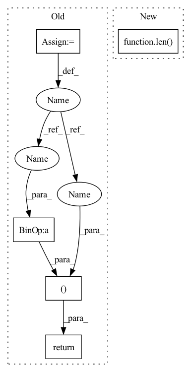

Pattern ID :1523

Before Change
for vq in self.vqs:
_xq, _diff, _codes = vq(x - xq)
diff = diff + _diff
xq = xq + _xq
codes.append(_codes)
codes = torch.cat(codes, 1)
return xq, (x - xq).pow(2).mean(), codes
def encode(self, x):
return self.forward(x)[-1]
After Change
all_losses = []
all_indices = []
n_q = n_q or len(self.layers)
for layer in self.layers[:n_q]:
quantized, indices, loss = layer(residual)
residual = residual - quantized
In pattern: SUPERPATTERN
Frequency: 3
Non-data size: 5
Instances
Fragment ID: 5104761
Project Name: acids-ircam/rave
Commit Name: b58cba5d330c227f2122bc07fcbf7ed068eb91be
Time: 2023-01-24
Author: caillon@ircam.fr
File Name: rave/quantization.py
M Class Name: ResidualVQ
N Class Name: ResidualVectorQuantization
M Method Name: forward(3)
N Method Name: forward(2)
M Parent Class: nn.Module
N Parent Class: nn.Module
M File Name: rave/quantization.py
N File Name: rave/quantization.py
M Start Line: 106
M End Line: 116
N Start Line: 289
N End Line: 307
'>
Before Change
for vq in self.vqs:
_xq, _diff, _codes = vq(x - xq)
diff = diff + _diff
xq = xq + _xq
codes.append(_codes)
codes = torch.cat(codes, 1)
return xq, (x - xq).pow(2).mean(), codes
def encode(self, x):
return self.forward(x)[-1]
After Change
all_losses = []
all_indices = []
n_q = n_q or len(self.layers)
for layer in self.layers[:n_q]:
quantized, indices, loss = layer(residual)
residual = residual - quantized
'>
Fragment ID: 5104763
Project Name: caillonantoine/rave
Commit Name: b58cba5d330c227f2122bc07fcbf7ed068eb91be
Time: 2023-01-24
Author: caillon@ircam.fr
File Name: rave/quantization.py
M Class Name: ResidualVQ
N Class Name: ResidualVectorQuantization
M Method Name: forward(3)
N Method Name: forward(2)
M Parent Class: nn.Module
N Parent Class: nn.Module
M File Name: rave/quantization.py
N File Name: rave/quantization.py
M Start Line: 106
M End Line: 116
N Start Line: 289
N End Line: 307
'>
Before Change
kl_loss = -0.5 * torch.sum(1 + log_vars - mus.pow(2) - log_vars.exp())
// Residual Attention Loss
attn_loss = self.guided_loss(attns.transpose(-2, -1), src_lens_targets, mel_lens_targets)
total_loss = (
mel_loss + duration_loss + beta * kl_loss + attn_loss
)
return (
total_loss,
mel_loss,
duration_loss,
kl_loss,
attn_loss,
beta,
)
After Change
mel_iter_comp = torch.sigmoid(mel_iter)
mel_iter_loss += self.sdtw_loss(mel_iter_comp, mel_targets_comp).mean()
// mel_iter_loss += self.sdtw_loss(mel_iter, mel_targets).mean()
mel_loss = (mel_iter_loss / (len(mel_iters) * mel_lens_targets)).mean()
// Duration Loss
duration_loss = self.lambda_ * (self.mae_loss(durations.sum(-1), mel_lens_targets) / src_lens_targets).mean()
'>
Fragment ID: 5104762
Project Name: keonlee9420/parallel-tacotron2
Commit Name: 2c2f8c0876192de39c8e6d3c4f579dc68a50a678
Time: 2021-05-25
Author: keonlee9420@gmail.com
File Name: model/loss.py
M Class Name: ParallelTacotron2Loss
N Class Name: ParallelTacotron2Loss
M Method Name: forward(4)
N Method Name: forward(4)
M Parent Class: nn.Module
N Parent Class: nn.Module
M File Name: model/loss.py
N File Name: model/loss.py
M Start Line: 50
M End Line: 91
N Start Line: 48
N End Line: 86